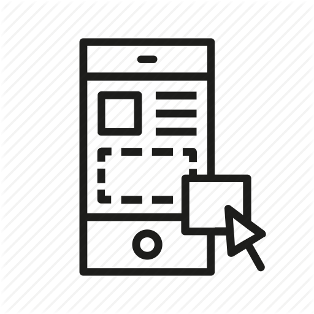
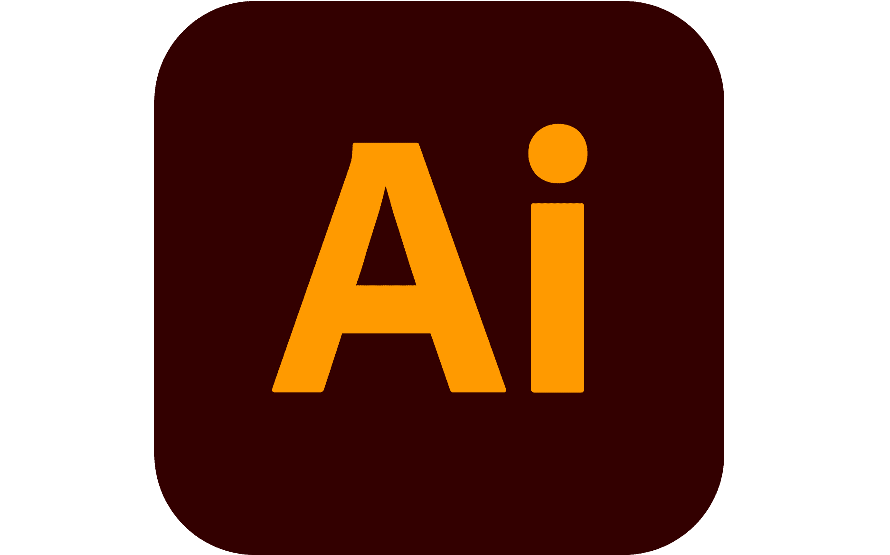

About Me
Professional Overview
I'm a passionate digital design student dedicated to crafting intuitive digital experiences that seamlessly blend functionality with aesthetic appeal. My design philosophy centers on user-centered solutions that solve real-world problems through thoughtful, innovative design.
Core Design Skills
Design Process
-
 User Research
User Research
-
 Wireframing
Wireframing
-  Prototyping
-
 Usability Testing
Usability Testing
Technical Tools
-
 Figma (Primary)
Figma (Primary)
-
 Adobe Photoshop
Adobe Photoshop
-  Adobe Illustrator
-
 HTML/CSS
HTML/CSS
Personal Interests
Beyond design, I find inspiration through boxing, which cultivates discipline and focus. I am deeply passionate about leveraging Figma as a primary design tool, continuously refining my prototyping skills and exploring innovative design solutions for my academic and personal projects. My commitment to design excellence drives me to constantly iterate, experiment, and enhance the user experience through meticulous and creative digital design approaches.
Design Philosophy
I believe great design is about more than just aesthetics—it's about creating meaningful experiences that solve user problems efficiently and elegantly. Each project is an opportunity to tell a story and make digital interactions more intuitive and engaging.